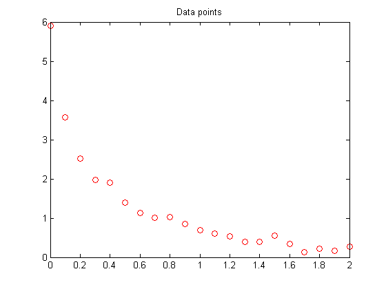
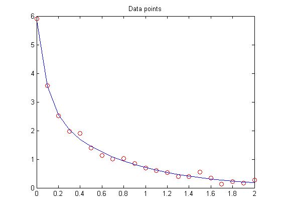
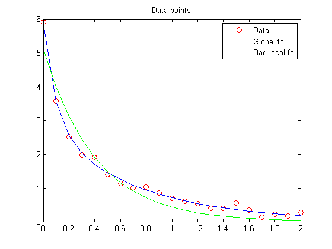

Nonlinear Data-Fitting
This example demonstrates fitting a nonlinear function to data using several Optimization Toolbox™ algorithms.
Contents
Problem Setup
Consider the following data:
Data = ...
[0.0000 5.8955
0.1000 3.5639
0.2000 2.5173
0.3000 1.9790
0.4000 1.8990
0.5000 1.3938
0.6000 1.1359
0.7000 1.0096
0.8000 1.0343
0.9000 0.8435
1.0000 0.6856
1.1000 0.6100
1.2000 0.5392
1.3000 0.3946
1.4000 0.3903
1.5000 0.5474
1.6000 0.3459
1.7000 0.1370
1.8000 0.2211
1.9000 0.1704
2.0000 0.2636];
Let's plot these data points.
t = Data(:,1); y = Data(:,2); % axis([0 2 -0.5 6]) % hold on plot(t,y,'ro') title('Data points') % hold off
We would like to fit the function
y = c(1)*exp(-lam(1)*t) + c(2)*exp(-lam(2)*t)
to the data.
Solution Approach Using lsqcurvefit
The lsqcurvefit function solves this type of problem easily.
To begin, define the parameters in terms of one variable x:
x(1) = c(1) x(2) = lam(1) x(3) = c(2) x(4) = lam(2)
Then define the curve as a function of the parameters x and the data t:
F = @(x,xdata)x(1)*exp(-x(2)*xdata) + x(3)*exp(-x(4)*xdata);
We arbitrarily set our initial point x0 as follows: c(1) = 1, lam(1) = 1, c(2) = 1, lam(2) = 0:
x0 = [1 1 1 0];
We run the solver and plot the resulting fit.
[x,resnorm,~,exitflag,output] = lsqcurvefit(F,x0,t,y) hold on plot(t,F(x,t)) hold off
Local minimum possible.
lsqcurvefit stopped because the final change in the sum of squares relative to
its initial value is less than the default value of the function tolerance.
x =
Columns 1 through 3
3.006845737733125 10.586854218994908 2.889093120438315
Column 4
1.400341514966891
resnorm =
0.147722572048114
exitflag =
3
output =
firstorderopt: 7.889080477618132e-006
iterations: 6
funcCount: 35
cgiterations: 0
algorithm: 'large-scale: trust-region reflective Newton'
message: [1x460 char]
 Solution Approach Using fminunc
To solve the problem using fminunc, we set the objective function as the sum of squares of the residuals.
Fsumsquares = @(x)sum((F(x,t) - y).^2); opts = optimset('LargeScale','off'); [xunc,ressquared,eflag,outputu] = ... fminunc(Fsumsquares,x0,opts)
Local minimum found.
Optimization completed because the size of the gradient is less than
the default value of the function tolerance.
xunc =
Columns 1 through 3
2.889015274844785 1.400313980001329 3.006919302957509
Column 4
10.586172160407736
ressquared =
0.147722571779314
eflag =
1
outputu =
iterations: 30
funcCount: 185
stepsize: 1
firstorderopt: 2.947592962696121e-005
algorithm: 'medium-scale: Quasi-Newton line search'
message: [1x438 char]
Notice that fminunc found the same solution as lsqcurvefit, but took many more function evaluations to do so. The parameters for fminunc are in the opposite order as those for lsqcurvefit; the larger lam is lam(2), not lam(1). This is not surprising, the order of variables is arbitrary.
fprintf(['There were %d iterations using fminunc,' ... ' and %d using lsqcurvefit.\n'], ... outputu.iterations,output.iterations) fprintf(['There were %d function evaluations using fminunc,' ... ' and %d using lsqcurvefit.'], ... outputu.funcCount,output.funcCount)
There were 30 iterations using fminunc, and 6 using lsqcurvefit. There were 185 function evaluations using fminunc, and 35 using lsqcurvefit.
Splitting the Linear and Nonlinear Problems
Notice that the fitting problem is linear in the parameters c(1) and c(2). This means for any values of lam(1) and lam(2), we can use the backslash operator to find the values of c(1) and c(2) that solve the least-squares problem.
We now rework the problem as a two-dimensional problem, searching for the best values of lam(1) and lam(2). The values of c(1) and c(2) are calculated at each step using the backslash operator as described above.
type fitvector
function yEst = fitvector(lam,xdata,ydata) %FITVECTOR Used by DATDEMO to return value of fitting function. % yEst = FITVECTOR(lam,xdata) returns the value of the fitting function, y % (defined below), at the data points xdata with parameters set to lam. % yEst is returned as a N-by-1 column vector, where N is the number of % data points. % % FITVECTOR assumes the fitting function, y, takes the form % % y = c(1)*exp(-lam(1)*t) + ... + c(n)*exp(-lam(n)*t) % % with n linear parameters c, and n nonlinear parameters lam. % % To solve for the linear parameters c, we build a matrix A % where the j-th column of A is exp(-lam(j)*xdata) (xdata is a vector). % Then we solve A*c = ydata for the linear least-squares solution c, % where ydata is the observed values of y. A = zeros(length(xdata),length(lam)); % build A matrix for j = 1:length(lam) A(:,j) = exp(-lam(j)*xdata); end c = A\ydata; % solve A*c = y for linear parameters c yEst = A*c; % return the estimated response based on c
Solve the problem using lsqcurvefit, starting from a two-dimensional initial point lam(1), lam(2):
x02 = [1 0]; F2 = @(x,t) fitvector(x,t,y); [x2,resnorm2,~,exitflag2,output2] = lsqcurvefit(F2,x02,t,y)
Local minimum possible.
lsqcurvefit stopped because the final change in the sum of squares relative to
its initial value is less than the default value of the function tolerance.
x2 =
10.586091914554604 1.400299508248144
resnorm2 =
0.147722571771667
exitflag2 =
3
output2 =
firstorderopt: 4.402832303414261e-006
iterations: 10
funcCount: 33
cgiterations: 0
algorithm: 'large-scale: trust-region reflective Newton'
message: [1x460 char]
The efficiency of the two-dimensional solution is similar to that of the four-dimensional solution:
fprintf(['There were %d function evaluations using the 2-d ' ... 'formulation, and %d using the 4-d formulation.'], ... output2.funcCount,output.funcCount)
There were 33 function evaluations using the 2-d formulation, and 35 using the 4-d formulation.
Split Problem is More Robust to Initial Guess
Choosing a bad starting point for the original four-parameter problem leads to a local solution that is not global. Choosing a starting point with the same bad lam(1) and lam(2) values for the split two-parameter problem leads to the global solution. To show this we re-run the original problem with a start point that leads to a relatively bad local solution, and compare the resulting fit with the global solution.
x0bad = [5 1 1 0]; [xbad,resnormbad,~,exitflagbad,outputbad] = ... lsqcurvefit(F,x0bad,t,y) hold on plot(t,F(xbad,t),'g') legend('Data','Global fit','Bad local fit','Location','NE') hold off fprintf(['The residual norm at the good ending point is %f,' ... ' and the residual norm at the bad ending point is %f.'], ... resnorm,resnormbad)
Local minimum possible.
lsqcurvefit stopped because the final change in the sum of squares relative to
its initial value is less than the default value of the function tolerance.
xbad =
Columns 1 through 3
-20.251924652109146 2.479610953226763 25.375718415409178
Column 4
2.479490298501871
resnormbad =
2.217300419595296
exitflagbad =
3
outputbad =
firstorderopt: 0.003592084866026
iterations: 31
funcCount: 160
cgiterations: 0
algorithm: 'large-scale: trust-region reflective Newton'
message: [1x460 char]
The residual norm at the good ending point is 0.147723, and the residual norm at the bad ending point is 2.217300.